Projects
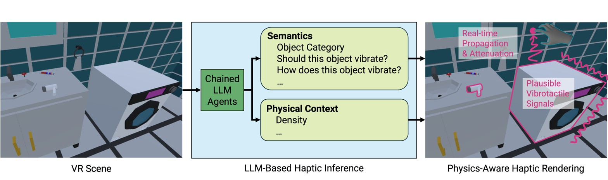
Scene2Hap: Generating Scene-Wide Haptics for VR from Scene Context with Multimodal LLMs
Haptic feedback contributes to immersive virtual reality (VR) experiences. However, designing such feedback at scale for all objects within a VR scene remains time-consuming. We present Scene2Hap, an LLM-centered system that automatically designs object-level vibrotactile feedback for entire VR scenes based on the objects’ semantic attributes and physical context. Scene2Hap employs a multimodal large language model to estimate each object’s semantics and physical context, including its material properties and vibration behavior, from multimodal information in the VR scene. These estimated attributes are then used to generate or retrieve audio signals, subsequently converted into plausible vibrotactile signals. For more realistic spatial haptic rendering, Scene2Hap estimates vibration propagation and attenuation from vibration sources to neighboring objects, considering the estimated material properties and spatial relationships of virtual objects in the scene. Three user studies confirm that Scene2Hap successfully estimates the vibration-related semantics and physical context of VR scenes and produces realistic vibrotactile signals.
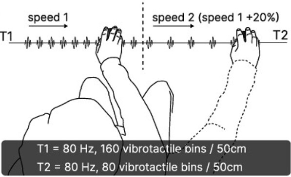
Haptic Redirection
We were inspired by the observation that vibrations arise when a finger moves over a textured surface, influenced by two factors: the scanning speed and the surface properties. We investigated if modifying vibrations can influence movement speed. Through three psychophysical experiments, we showed that: (1) Human movement speed is affected by the properties of vibrotactile feedback. (2) Movement speed remains unchanged during transitions if users are aware of vibrotactile feedback changes. However, we found that (3) movement speed increases by ∼20% when vibration pulses are reduced by 50%, provided users are unaware of the vibrotactile feedback change.
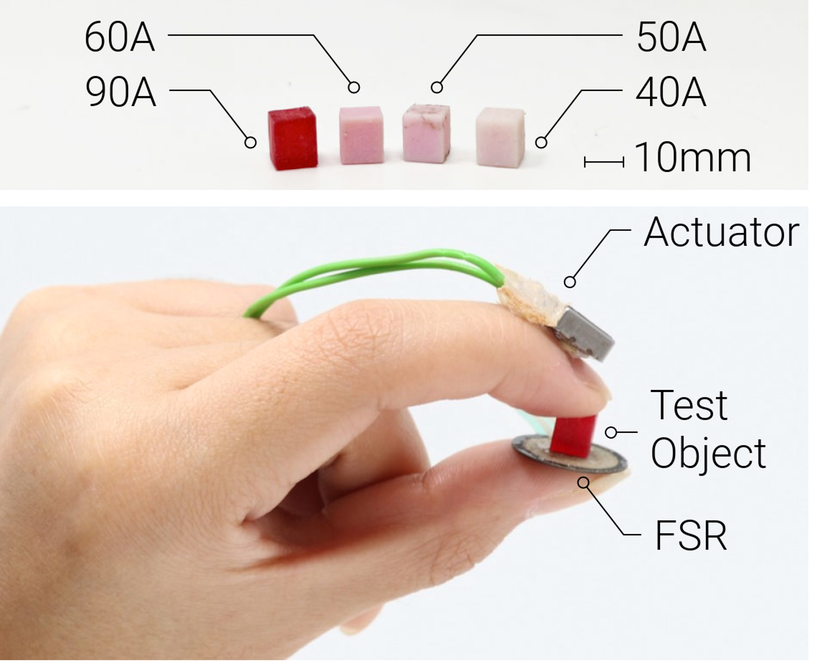
Physical Compliance and the Compliance Illusion: The Importance of Action for Perception
We present a detailed analysis of compliance estimates and pressure profiles of exploration behaviors of 12 participants while perceiving both physical and virtual compliance. Our results indicate that the experience of virtual compliance provided by the compliance illusion is distinct from that of physical compliance and that these experiences are mediated by distinct sensorimotor processes. This is evident in the non-additive nature of both real and illusory compliance perceptions and the separable exploratory actions of the participants in response to real and illusory compliance. These insights affect the design of augmented and virtual tactile reality systems, shed light on the mechanisms of compliance illusion, and provide data in support of closed-loop theories of tactile perception.
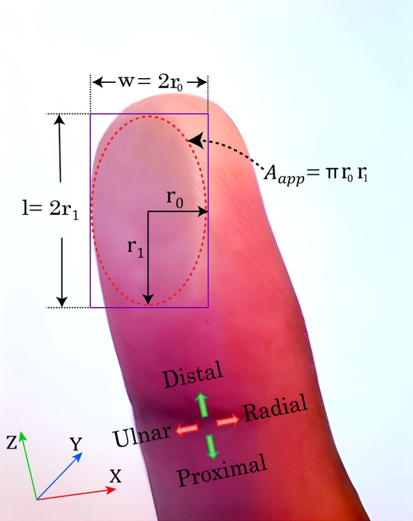
Effect of Finger Orientation on Contact Stiffness and Area During Sliding
We conducted an experimental study to investigate the evolution of apparent contact area between a human fingerpad and a smooth flat surface under normal loading (stationary finger) and combined loading (sliding finger) conditions for 4 different internal rotations of the index finger (away from the second finger) about its axial (longitudinal) axis and 2 different sliding directions. Our results show a reduction in the contact area for radial sliding as expected, but a surprising increase in the ulnar direction for the higher finger rotations. We argue that this asymmetric behavior in contact area evolution stems from the changes in the equivalent radius of curvature and stiffening of the finger as the rotation angle increases, which manifests itself as the asymmetric stress distribution at the leading and trailing edges of the fingerpad in our finite element simulations.
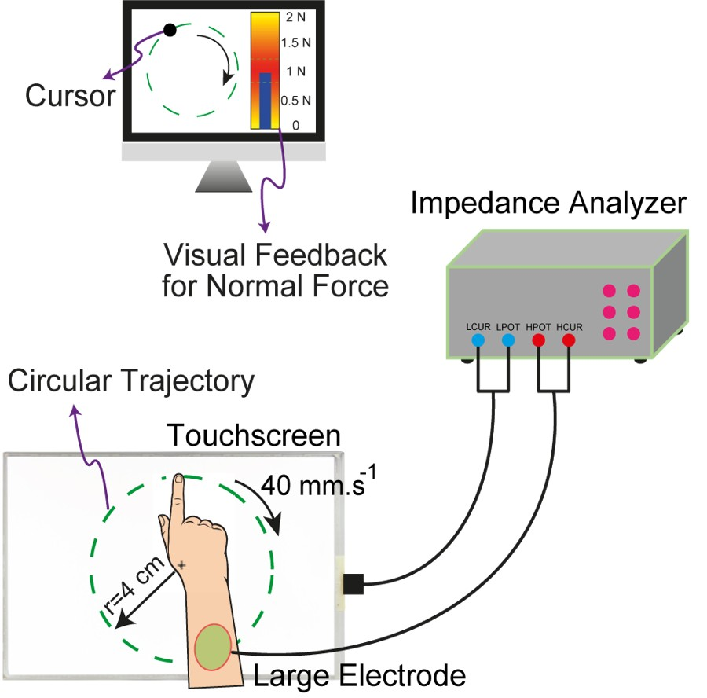
Experimental Estimation of Gap Thickness and Electrostatic Forces Between Contacting Objects Under Electroadhesion.
We proposed a new and systematic approach based on electrical impedance measurements to infer the electrostatic forces between two dielectric materials under electroadhesion (EA). The proposed approach is applied to tactile displays, where skin and voltage-induced touchscreen impedances are measured and subtracted from the total impedance to obtain the remaining impedance to estimate the electrostatic forces between the finger and the touchscreen. This approach also marks the first instance of experimental estimation of the average air gap thickness between a human finger and a voltage-induced capacitive touchscreen. Moreover, the effect of electrode polarization impedance on EA is investigated. Precise measurements of electrical impedances confirm that electrode polarization impedance exists in parallel with the impedance of the air gap, particularly at low frequencies, giving rise to the commonly observed charge leakage phenomenon in EA.
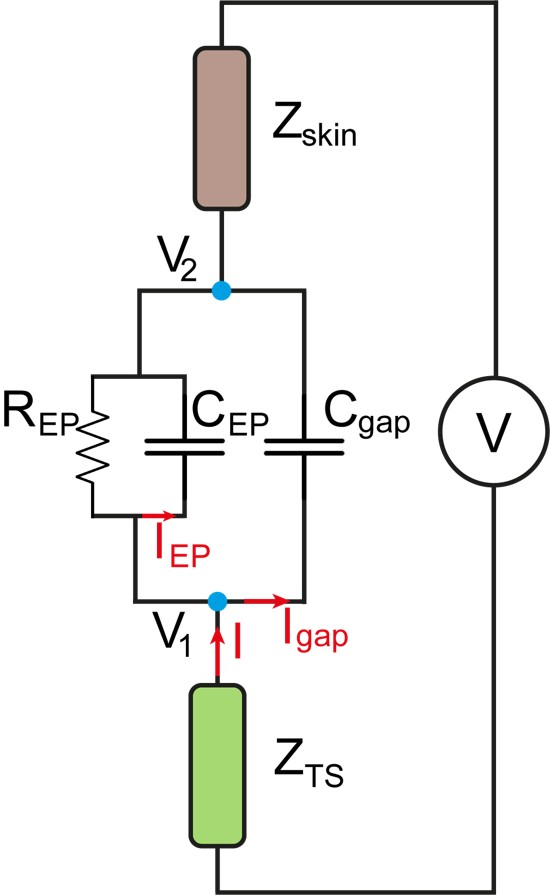
Effect of Electrode Polarization Impedance on Electroadhesion
We investigated the effect of electrode polarization (EP) impedance on electroadhesion (EA) between a human finger and a voltage-induced touchscreen. By conducting precise measurements of electrical impedances, we could ascertain the presence of EP impedance that operates in parallel with the impedance of the air gap between finger and touchscreen. Our findings indicate that the EP impedance plays a dominant role, particularly at low frequencies, thereby giving rise to the charge leakage phenomenon commonly observed in EA.
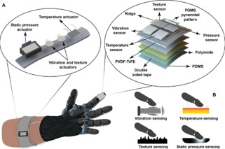
Electronic Skin (E-Skin)
Inspired by the sensory properties of skin, we presented a micro-fabricated, multiplexed electronic skin (e-skin) with actuators for sensory feedback in upper limb amputation. The piezoelectric-capacitive sensor array detects static pressure, temperature, vibration, and texture, with integrated actuators stimulating the skin to provide real-time feedback. The sensors integrate with actuators via readout electronics, making the system standalone and easy to use. The flexible, compact sensor array design (two pixels within a 1 cm² footprint) detects a wide range of pressure (0.5–10 kPa), temperature (22–60 °C), vibration (35–100 Hz), and texture (2.5–45 Hz), suitable for daily use. The e-skin, attached to a prosthetic finger, is tested for feasibility on human volunteers with wrist-mounted actuators.
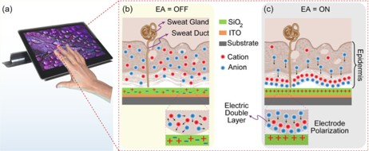
Effect of Finger Moisture on Tactile Perception of Electroadhesion
We investigated the effect of finger moisture on the tactile perception of electroadhesion with 10 participants. Participants with moist fingers exhibited markedly higher threshold levels. Our electrical impedance measurements showed a substantial reduction in impedance magnitude when sweat was present at the finger-touchscreen interface, indicating increased conductivity. Supporting this, our mechanical friction measurements showed that the relative increase in electrostatic force due to electroadhesion is lower for a moist finger.
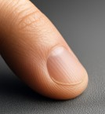
Tactile Perception of Coated Smooth Surfaces
In this study, we first perform 2AFC experiments with 8 participants to quantify their tactile discrimination ability of 5 smooth glass surfaces coated with 3 different materials. We then measure the coefficient of friction between human finger and those 5 surfaces via a custom-made tribometer and their surface energies via Sessile drop test performed with 4 different liquids. The results of our psychophysical experiments and the physical measurements show that coating material has a strong influence on our tactile perception and human finger is capable of detecting differences in surface chemistry due to, possibly, molecular interactions.
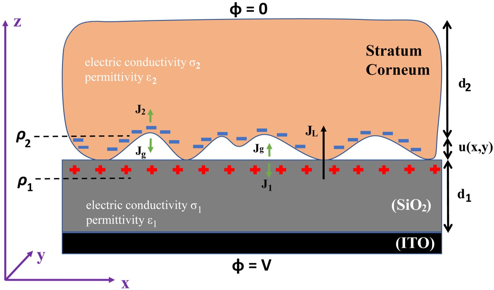
Frequency-Dependent Electroadhesion
We investigated the frequency-dependent behavior of electrostatic forces between a human finger and a touchscreen. The experimental data (collected using our custom-made tribometer) showed that electrostatic force follows an inverted parabolic curve with a peak value around 250 Hz. An electro-mechanical model based on the fundamental laws of electric fields and Persson's multi-scale contact mechanics theory was developed. Compared to the existing ones in the literature, the proposed model takes into account the charge accumulation and transfer at the interfaces of finger and touchscreen. The model is in good agreement with the experimental data and shows that the change in magnitude of electrostatic force is mainly due to the leakage of charge from the Stratum Corneum to the touchscreen at frequencies lower than 250 Hz and electrical properties of the SC at frequencies higher than 250 Hz.
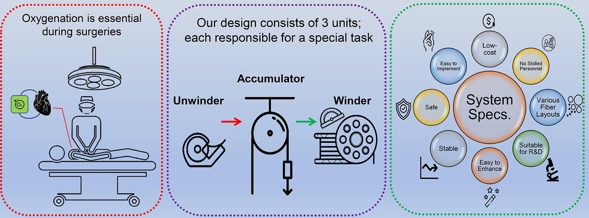
Fiber Winding Machine for Blood Oxygenator Prototypes
In this project, a hollow-fiber assembly system is designed and built for winding research grade extracorporeal blood oxygenator mandrels at different layout dimensions so that these different configurations can be evaluated for mass transfer capacity and blood damage. The hardware design and manufacturing details of this system presented together with its impact on the prototype oxygenator device assembly process.
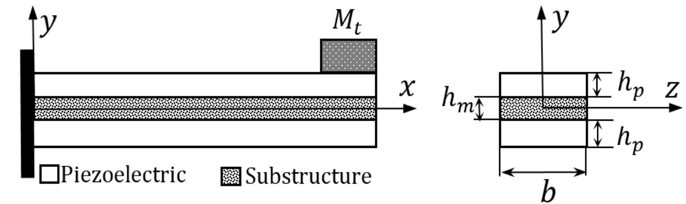
Vibration Analysis of MEMS Piezoelectric Cantilever Beam
In a series of papers, we presented the mathematical modeling to analyse the vibrational behavior of MEMS piezoelectric cantilever beams.
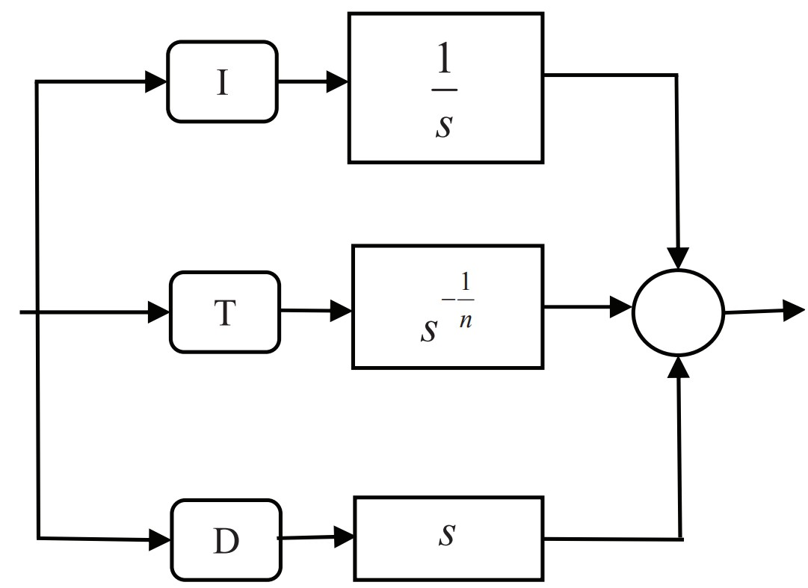
Applying of PID, FPID, TID, and ITID controllers on AVR system using particle swarm optimization (PSO)
We presented four PID, FPID, TID, and ITID controllers and applied each one on four different error functions in an AVR system by means of PSO algorithm. According to rising time, settling time and overshoot percentage, we prepared an understanding of finding the best controller easily while working with different error functions.